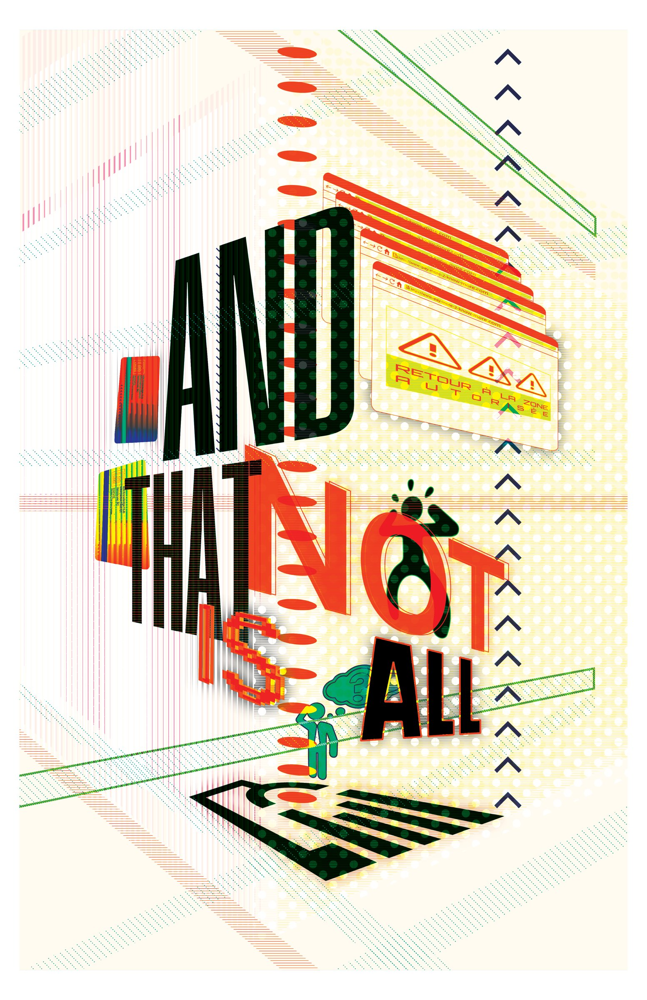

[Two or three sentences on the brief: what Deep Breakfast is and what you set out to make.]
- Project
- Deep Breakfast
- Role
- Designer
- Context
- Mentorship project
- Mentor
- Dominic Prevost, Executive Creative Director, Resonance
- Year
- [Year]

[Two or three sentences on the brief: what Deep Breakfast is and what you set out to make.]